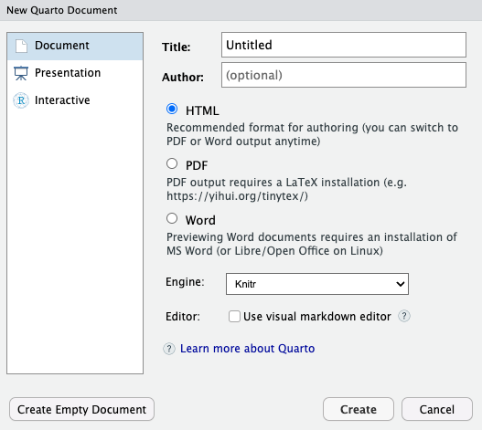
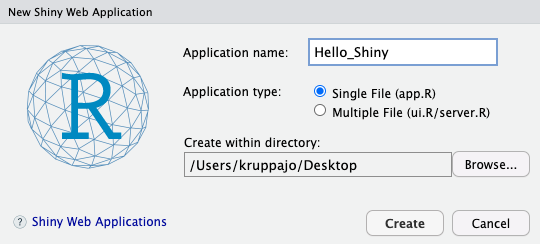

14 Quarto und Shiny App
Letzte Änderung am 08. September 2023 um 09:29:21
“You have to be creative to do science. Otherwise you’re just repeating tired old formulas. You arent’t doing anything new.” — Steven Hawking

Ja und jetzt wird es wirklich wild. Wir schauen hinter den Vorhang der Bühne. Denn du liest ja hier, was ich in R Quarto geschrieben habe. Also ich nutze wirklich R Quarto um diese Webseite hier in R und Quarto zu erstellen. Gut ich lade dann noch alles bei Github hoch, aber am Ende ist es wirklich nicht schwer. Denn wenn es wirklich schwer wäre, dann hätte ich es auch nicht hinbekommen. Was Webseiten programmieren und so ein Zeug angeht, habe ich nämlich Null Ahnung. Das was du hier alles siehst, macht R Quarto für mich. Und das ist ganz phantastisch.
Eine andere Sache, dir wir uns auch noch anschauen wollen, ist im Prinzip ein interaktive Visualisierung. Wir können nämlich R Shiny nutzen um reponsive (deu. reagierend) Abbildungen und Tabellen zu erstellen. Der vollständige Name lautet Shiny Web App, aber ich kürze gerne auf R Shiny ab. Wir können also eine Webseite mit Reglern bauen, die es uns dann ermöglichen die Abbildungen und Tabellen anhand der Einstellung am Regler sekündlich zu ändern. Das ermöglicht Dritten dann deine Auswertung auch mit einem anderen Subset deiner Daten durchzuführen oder aber sich etwas anderes in den Daten anzuschauen. Insbesondere für die Darstellung von großen Datenbanken mit Temperatur, Gewächshaustyp und Pflanzenarten ergibt sich hier ganz neue Möglichkeiten.
14.1 Genutzte R Pakete
Wir wollen folgende R Pakete in diesem Kapitel nutzen.
Am Ende des Kapitels findest du nochmal den gesamten R Code in einem Rutsch zum selber durchführen oder aber kopieren.
14.2 R Quarto
Was du hier siehst ist in R Quarto geschrieben. Damit ist es recht schwer für mich dir hier in diesem Text zu zeigen, wie der Text strukturell aufgebaut ist. Dafür gibt es die tolle Hilfsseite Welcome to Quarto, die dir da sehr viel weiter hilft. In der folgenden Abbildung 14.1 siehst du einmal, wie du ein neues Quarto Dokument erstellst. Wir gehen hier nicht den ganzen Prozess durch, dafür gibt es dann am Ende noch ein YouTube Video.

Quarto Document... aus.In der Abbildung 14.2 siehst du dann das nächste Fenster, indem du dann den Titel des Dokuments und dich als Autor eintragen kannst. Darüber hinaus auch noch das Ausgabeformat. Richtig, du kannst hier auch gleich MS Word wählen. Ich nehme dann meistens HTML aber auch PDF funktioniert für mich gut. Du kannst dann aber später jederzeit die Ausgabe ändern! Du bist hier nicht an einen Typ gebunden, das ist ja das Schöne. Ein Skript, viele Ausgabenmöglichkeiten.

Im Folgenden einmal die Links zu den einzelnen Kapiteln der Hilfeseite von Quarto, die dich dann direkt zu den entsprechenden Seiten bringen.
-
Creating a Document — hier einmal als Einstieg das HTML Dokument, aber du kannst natürlich auch zu den anderen Dokumenttypen leicht wechseln. Ein Dokument kannst du dann als Word erstellen und mit diesem Dokument und den erstellten Tabellen weiterarbeiten. Eine gute Möglichkeit um mal einen Projektbericht zu schreiben.
-
Creating a Presentation — hier einmal die Möglichkeit um eine Präsentation zu erstellen. Und verrückterweise gehen sogar Power Point Präsentationen. Ich habe selber noch nicht PowerPoint mit R kombiniert. Daher weiß ich auch noch nicht wie sich das dann mit R verhält.
- Creating a Website — hier einmal die Erstellung einer Webseite. Muss nicht R zusammen sein. Aber ich finde es ist ein angenehmer Weg um seine Ergebnisse anderen öffentlich zu präsentieren. Es gibt hier sicherlich auch die Möglichkeit, den Zugriff auf die Webseite zu begrenzen, so dass Google und Co. die Webseite nicht finden.
- Creating a Book – hier einmal die Erstellung eines Buches. Das was du hier gerade liest, ist mit dem Template eines Buches in R Quarto erstellt. Ja, du besuchst die Seite über einen Brwoser, aber die grundlegende Struktur ist die eines Buches. Theoretisch könnte ich den Text hier auch als E-Book exportieren. Dafür ist dann aber leider hier alles zu groß geworden.
Die Stärke von R Quarto kommt natürlich zu tragen, wenn wir die Analysen oder die deskriptive Statistik in einem Dokument zusammen erstellen können. Die deskriptiven Tabellen können wir leicht mit dem R Paket modelsummary oder gtsummary erstellen. Ich zeige die Erstellung einmal exemplarisch in dem Kapitel zur deskriptiven Statistik in dem Abschnitt zur Automatisierten Tabellenerstellung in R. Neben den beiden vorgestellten gibt es natürlich auch Alternativen zu gtsummary und modelsummary. Da müsstest du dann aber mal selber schauen oder mich direkt Fragen. Wie immer gibt es in R nicht nur die eine Möglichkeit eine Tabelle zu erstellen.
14.3 R Shiny App
Vor gar nicht allzu langer Zeit sprach ich mit einer Freundin aus meiner eigenen Studentenzeit, die jetzt bei einer großen Pharmafirma arbeitet, über R und die Anwendung von R bei ihr in der Firma. Wie sich herausstellte ist dort R Shiny sehr beliebt. Die Statistiker oder jetzt Data Scientist und Data Analyst arbeiten dort die Datenmengen in R Shiny Apps auf, so dass dann die Anderen in der Firma dann leichter an den Daten rumschrauben können. Das erspart allen sehr viel Arbeit, den fixierte Berichte müssen bei jeder Änderung ja wieder neu gemacht werden.
Deshalb kann ich nur sagen: Welcome to Shiny. Wenn du wirklich jemanden mit deiner Analyse von Daten beeindrucken willst, dann nutze R Shiny. Auf der anderen Seite gibt es manchmal Datensätze mit so vielen Subgruppen oder aber anderen Messwerten, dass ich immer gar nicht weiß, was ich alles in einer statischen Abbildung reinpacken soll. Da ist mir dann eine dynamische Abbildung hundertmal lieber. Ich kann auch hier nur die groben Umrisse liefern. Mehr erfährst du dann in dem Video zur Erstellung einer Shiny App. Aber wie immer, einfach mal selber ausprobieren. Du kannst wirklich mit wenig Aufwand richtig gute interaktive Webtools erschaffen.
14.3.1 Shiny App in RStudio
Das tolle an der R Shiny App ist, dass wir alles im RStudio bauen können. In der Abbildung 14.3 siehst du einmal, wie du eine Shiny Web App einfach erstellen kannst. Wir gehen hier nicht den ganzen Prozess durch, sondern ich gehe wie immer auf die häufigsten Probleme einmal ein. Hier gibt es aber nicht so viele davon, eher Geschmacksfragen.
Shiny Web App... aus.Jetzt öffnet sich ein neues Fenster und du kannst den Namen deiner Shiny App eintragen. Hier ist es wichtig, sich schon für einen guten Namen zu entscheiden, später wird der Name auch Teil der Webadresse mit dem du dann die Shiny App aufrufst. Natürlich nur unter der Annahme, dass du deine Shiny App ins Internet stellst. Du kannst die Shiny App auch nur privat auf deinen Rechner laufen lassen.
Jetzt muasst du dich noch entscheiden, ob deine Shiny App eher klein wird, dann nutze die Option Single File (app.R). Dann bauen wir eine einfache App, wie ich sie gleich mal in dem ersten Abschnitt vorstellen werde. Wenn deine Shiny App komplexer wird, dann solltest du Multiple Files (ui.R/server.R) wählen. Du kannst aber auch später leciht aus der einen Datei dann zwei Dateien bauen. Meist fange ich immer mit einer Datei app.R an und schaue wie komplex die Shiny App wird.

Im Folgenden schauen wir uns also die zwei Fälle einmal an. In dem ersten Fall willst du nur eine simple Shiny App mit wenigen Funktionen und einer simplen Oberfläche für die interaktive Anwendung bauen. Im zweiten Fall haben wir es dann schon mit einem komplexeren Fall zu tun und wir spalten dann die Oberfläche (ui.R) von den Berechnungen (server.R) ab.
14.3.2 Einfache Shiny App
flowchart LR
subgraph ide1 ["/home/myWork/shiny_simple"]
direction TB
A{app.R}:::nodeA --- B("ui( )"):::nodeB
A{app.R}:::nodeA --- C("server( )"):::nodeB
end
classDef nodeA fill:#E69F00,stroke:#333,stroke-width:0.75px
classDef nodeB fill:#56B4E9,stroke:#333,stroke-width:0.75px
ui und dem server in einer Datei app.R enthalten.14.3.3 Komplexere Shiny App
flowchart LR
subgraph ide1 ["/home/myWork/shiny_simple"]
direction LR
B[(ui.R)]:::nodeB --> A{app.R}:::nodeA
C[(server.R)]:::nodeB --> A{app.R}:::nodeA
end
classDef nodeA fill:#E69F00,stroke:#333,stroke-width:0.75px
classDef nodeB fill:#56B4E9,stroke:#333,stroke-width:0.75px
ui.R, server.R und app.R im Ordner shiny_simple.In der Abbildung 14.7 ist dargestellt.

ui.R und der server.R. Die ui.R bildet die Oberfläche ab auf der sich die Regler befinden. Die geänderten Reglerinformationen werden über input dann in der server.R Datei verarbeitet und als ouput wieder an die ui.R wiedergeben. Dann ändert sich die Wiedergabe.14.4 Our World in Data
Global emissions have not yet peaked
Oh, was für ein Segen hier dann clean_names() aus dem R Paket janitor ist.
co2_tbl <- read_csv("data/annual-co-emissions-by-region.csv") %>%
clean_names()| entity | code | year | annual_co2_emissions |
|---|---|---|---|
| Afghanistan | AFG | 1949 | 14656 |
| Afghanistan | AFG | 1950 | 84272 |
| Afghanistan | AFG | 1951 | 91600 |
| Afghanistan | AFG | 1952 | 91600 |
| Afghanistan | AFG | 1953 | 106256 |
| Afghanistan | AFG | 1954 | 106256 |
| Afghanistan | AFG | 1955 | 153888 |
co2_tbl %>%
filter(entity %in% c("World", "Europe", "China", "Africa")) %>%
ggplot(aes(year, annual_co2_emissions, color = entity)) +
theme_bw() +
geom_line() +
theme(legend.position = "none") +
scale_x_continuous(expand = c(0, 30), breaks = c(seq(1750, 2021, by = 25), 2021)) +
geom_dl(aes(label = entity), method = list(dl.trans(x = x + 0.2), "last.points", cex = 0.8))